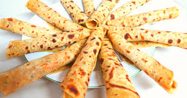

Presented by; Johnnie's Culinary point.

Chapati is a staple food in Asia, the Middle East and Africa. Other names for roti include safati, rotli, phulka, roshi, and safaati. It is also popular in the Arabian Peninsula and Caribbean. Its history dates back to ancient times. It is a staple in India, Nepal, and the Arabian Peninsula, but today it is eaten all over the world.
Have you ever heard about a East African Chapati? East African Chapati is a beautiful unleavened flat Bread eaten in East Africa in Countries like Burundi Uganda, Mozambique, Kenya,… From my exploration, We will write about the direction to make the best and easiest recipe of a Chapati.
Course: Bread, Breakfast, Main dishes, Party | Cuisine: African | CookingStyle: Baking | Prep Time: 50 minutes minutes | Cook Time: 20 minutes minutes | Total Time: 1 hour hour 10 minutes minutes | Servings: 4 servings | Calories: 217kcal
PS: If you want, you can freeze it for a couple of days and reheat it when needed. The dough should be eaten fresh or reheated. Once it has cooled completely, it can be stored in the fridge.
Serving: 4pieces | Calories: 217kcal | Carbohydrates: 35g | Protein: 4g | Fat: 5g | Sodium: 295mg | Fiber: 1g
Start by rolling out the dough to a thin disc and brushed with oil or butter. Use a rolling pin to roll the disc from the centre, forming layers of dough. Avoid over-rolling the dough or it will become hard and tough. Brush the top with the melted oil and then place it on the skillet. Cook the chapati until the top is golden brown and there are bubbles. The chapati should be ready to serve after about two minutes.
Start by rolling out the dough to a thin disc and brushed with oil or butter. Use a rolling pin to roll the disc from the centre, forming layers of dough. Avoid over-rolling the dough or it will become hard and tough. Brush the top with the melted oil and then place it on the skillet. Cook the chapati until the top is golden brown and there are bubbles. The chapati should be ready to serve after about two minutes.
Begin by rolling the dough into a 20-cm circle. Add a little water and oil to the dough and knead until it is smooth and elastic. Be sure to cover the pan with a kitchen towel to prevent it from drying out. Once the chapati is rolled out, spread it out on a flat baking sheet and bake it until golden brown. It will be ready in about five to six minutes.
We wish you a happy cooking!